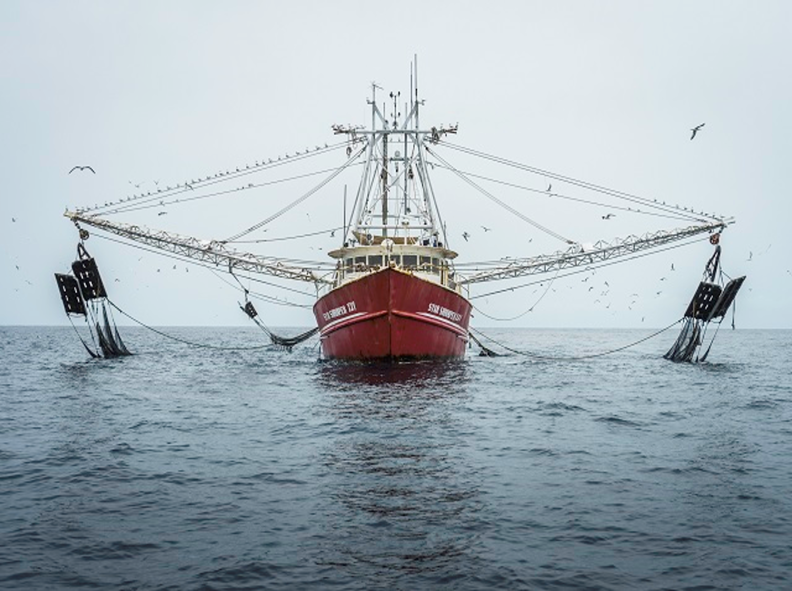
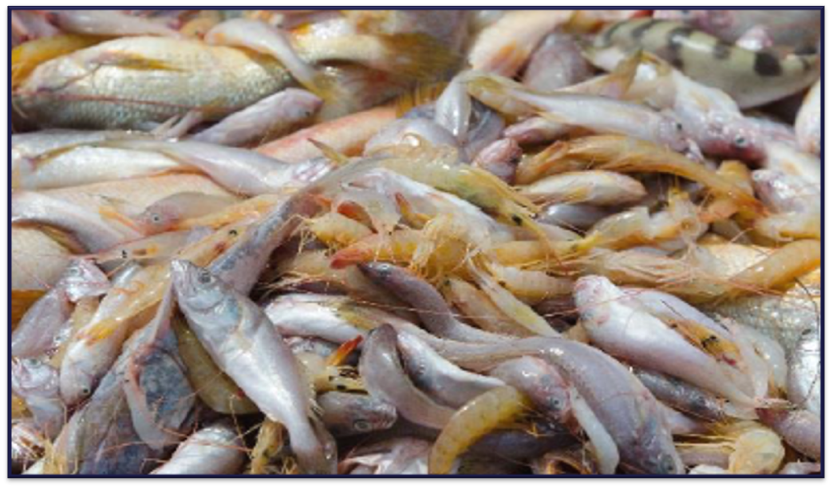
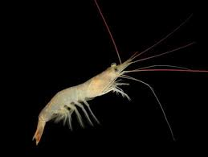

5 Appendix
5.1 Bottom trawl fishing vessel

A typical bottom trawl fishing vessel used in Guyana (The Maritime Executive, 2020)
5.2 Discarded fish species

An example of fish species discarded (Richardson, 2018)
5.3 Atlantic seabob shrimp

A typical photo of an Atlantic seabob shrimp caught offshore Guyana(Torrez, 2015)